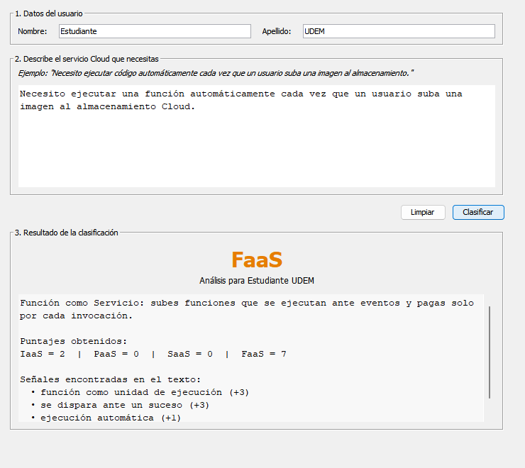

Reporte de actividad · 01
Clasificador de
modelos Cloud
Prototipo de escritorio en Java para clasificar descripciones como IaaS, PaaS, SaaS o FaaS.
Objetivo y solución
Se desarrolló cloud_models_classifier, una aplicación con interfaz gráfica que solicita nombre, apellido y una descripción de un servicio Cloud. El texto se analiza con expresiones regulares y reglas ponderadas; la categoría con mayor puntaje se presenta junto con las señales encontradas.
La solución permite reconocer los cuatro modelos solicitados sin usar un LLM para decidir la respuesta. Si ninguna categoría alcanza tres puntos, devuelve No determinado para evitar clasificaciones forzadas.
Arquitectura
La GUI no contiene las reglas del clasificador; cada responsabilidad permanece separada y los errores de entrada se manejan mediante una excepción específica.
Compilación con Java SDK
Se utilizó Microsoft OpenJDK 21. El JDK o Java SDK aporta javac, que compila los archivos .java a bytecode .class, y java, que inicia la JVM y ejecuta el programa.
javac -encoding UTF-8 -d bin src\Main.java src\ui\*.java src\logica\*.java src\pruebas\*.java
java -cp bin Main
java -cp bin pruebas.PruebasClasificadorFuncionamiento
- 1
Validar. Se rechazan campos vacíos, nombres con caracteres inválidos y descripciones demasiado cortas.
- 2
Normalizar. El texto pasa a minúsculas y se eliminan acentos para comparar variantes equivalentes.
- 3
Puntuar. Métodos independientes evalúan señales de IaaS, PaaS, SaaS y FaaS mediante Regex con pesos.
- 4
Mostrar. La GUI presenta la categoría, los cuatro puntajes y las señales que explican la decisión.

Pruebas realizadas
Se automatizaron nueve casos de clasificación y cinco validaciones. La siguiente tabla resume cinco entradas representativas solicitadas en la actividad.
| Descripción resumida | Esperado | Obtenido | Estado |
|---|---|---|---|
| Máquinas virtuales, almacenamiento y redes configurables | IaaS | IaaS | Correcto |
| Desplegar una app sin administrar servidores | PaaS | PaaS | Correcto |
| Correo en navegador con suscripción mensual | SaaS | SaaS | Correcto |
| Función ejecutada al subir una imagen | FaaS | FaaS | Correcto |
| Texto sin relación con servicios Cloud | No determinado | No determinado | Correcto |
Ajustes y conclusión
Las pruebas mostraron que mencionar “servidores” dentro de la frase sin administrar servidores podía favorecer incorrectamente a IaaS. Se agregó una regla de negación que resta ese puntaje. También se dio mayor peso a señales de eventos para distinguir FaaS cuando aparece la palabra “almacenamiento”.
El prototipo cumple el alcance de GUI, validación, separación de responsabilidades, Regex y pruebas. Ya incorpora normalización y scores como base de NLP. Como siguiente iteración quedan una CLI para texto libre y técnicas adicionales como tokenización, stopwords y lematización.